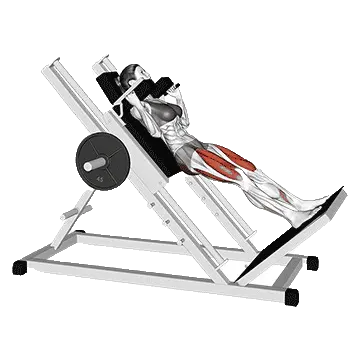

Hack Squat
Hack Squat mostra carga média e padrões de força como referência para pernas. Músculos principais: Quadríceps, Glúteo máximo.

Carga média: Intermediário
Referência para uma pessoa de nível intermediário.
Homens
157 kg
Mulheres
94 kg
Carga média de Hack Squat [1RM]
| Nível | ||
|---|---|---|
| Iniciante | 54 kg | 22 kg |
| Novato | 98 kg | 51 kg |
| Intermediário | 157 kg | 94 kg |
| Avançado | 231 kg | 149 kg |
| Elite | 315 kg | 214 kg |
Nota: estes padrões são estimativas de 1RM baseadas em atletas médios. Peso corporal, idade e outros fatores pessoais podem afetar os valores. Veja as tabelas detalhadas abaixo.
Padrões de força de Hack Squat (kg)
Homens por peso corporal (kg) [1RM]
| Peso corporal | Iniciante | Novato | Intermediário | Avançado | Elite |
|---|---|---|---|---|---|
| 50 | 23 | 51 | 92 | 146 | 209 |
| 55 | 28 | 59 | 104 | 161 | 226 |
| 60 | 34 | 68 | 115 | 174 | 242 |
| 65 | 40 | 76 | 125 | 187 | 258 |
| 70 | 46 | 84 | 136 | 200 | 272 |
| 75 | 52 | 92 | 146 | 212 | 286 |
| 80 | 58 | 100 | 155 | 223 | 300 |
| 85 | 64 | 107 | 165 | 234 | 313 |
| 90 | 69 | 114 | 174 | 245 | 325 |
| 95 | 75 | 121 | 182 | 256 | 337 |
| 100 | 80 | 128 | 191 | 266 | 348 |
| 105 | 86 | 135 | 199 | 275 | 360 |
| 110 | 91 | 142 | 207 | 285 | 370 |
| 115 | 96 | 148 | 215 | 294 | 381 |
| 120 | 101 | 155 | 223 | 303 | 391 |
| 125 | 106 | 161 | 230 | 312 | 401 |
| 130 | 111 | 167 | 237 | 320 | 410 |
| 135 | 116 | 173 | 244 | 328 | 420 |
| 140 | 121 | 179 | 251 | 336 | 429 |
Homens por idade [1RM]
| Idade | Iniciante | Novato | Intermediário | Avançado | Elite |
|---|---|---|---|---|---|
| 15 | 46 | 83 | 134 | 197 | 268 |
| 20 | 52 | 95 | 153 | 225 | 307 |
| 25 | 54 | 98 | 157 | 231 | 315 |
| 30 | 54 | 98 | 157 | 231 | 315 |
| 35 | 54 | 98 | 157 | 231 | 315 |
| 40 | 54 | 98 | 157 | 231 | 315 |
| 45 | 51 | 93 | 149 | 219 | 299 |
| 50 | 48 | 87 | 140 | 206 | 280 |
| 55 | 44 | 80 | 130 | 190 | 259 |
| 60 | 40 | 73 | 118 | 174 | 237 |
| 65 | 37 | 66 | 107 | 157 | 214 |
| 70 | 33 | 59 | 96 | 141 | 192 |
| 75 | 29 | 53 | 86 | 126 | 172 |
| 80 | 26 | 48 | 77 | 113 | 153 |
| 85 | 24 | 43 | 69 | 101 | 138 |
| 90 | 21 | 38 | 62 | 91 | 124 |
Mulheres por peso corporal (kg) [1RM]
| Peso corporal | Iniciante | Novato | Intermediário | Avançado | Elite |
|---|---|---|---|---|---|
| 40 | 9 | 29 | 62 | 107 | 161 |
| 45 | 12 | 34 | 69 | 116 | 172 |
| 50 | 15 | 39 | 76 | 124 | 182 |
| 55 | 18 | 43 | 82 | 132 | 191 |
| 60 | 21 | 47 | 87 | 139 | 200 |
| 65 | 23 | 52 | 93 | 146 | 208 |
| 70 | 26 | 55 | 98 | 153 | 216 |
| 75 | 29 | 59 | 103 | 159 | 224 |
| 80 | 31 | 63 | 108 | 165 | 231 |
| 85 | 34 | 66 | 112 | 171 | 237 |
| 90 | 36 | 70 | 117 | 176 | 244 |
| 95 | 38 | 73 | 121 | 181 | 250 |
| 100 | 41 | 76 | 125 | 186 | 256 |
| 105 | 43 | 79 | 129 | 191 | 261 |
| 110 | 45 | 82 | 133 | 196 | 267 |
| 115 | 48 | 85 | 137 | 200 | 272 |
| 120 | 50 | 88 | 140 | 205 | 277 |
Mulheres por idade [1RM]
| Idade | Iniciante | Novato | Intermediário | Avançado | Elite |
|---|---|---|---|---|---|
| 15 | 19 | 43 | 80 | 127 | 183 |
| 20 | 22 | 50 | 91 | 145 | 209 |
| 25 | 22 | 51 | 94 | 149 | 214 |
| 30 | 22 | 51 | 94 | 149 | 214 |
| 35 | 22 | 51 | 94 | 149 | 214 |
| 40 | 22 | 51 | 94 | 149 | 214 |
| 45 | 21 | 48 | 89 | 142 | 203 |
| 50 | 20 | 45 | 83 | 133 | 191 |
| 55 | 18 | 42 | 77 | 123 | 177 |
| 60 | 17 | 38 | 70 | 112 | 161 |
| 65 | 15 | 35 | 64 | 101 | 146 |
| 70 | 14 | 31 | 57 | 91 | 131 |
| 75 | 12 | 28 | 51 | 81 | 117 |
| 80 | 11 | 25 | 46 | 73 | 104 |
| 85 | 10 | 22 | 41 | 65 | 94 |
| 90 | 9 | 20 | 37 | 59 | 84 |
Nota: uma barra padrão de academia geralmente pesa 20 kg.
Registre e analise no app Shiba
Revise carga, repetições e progresso em um só lugar.
Como ler a tabela
| Nível | Descrição | Distribuição |
|---|---|---|
| Iniciante | Aprendeu a forma correta e treinou consistentemente por pelo menos 1 mês. | Base 5% |
| Novato | Treinou consistentemente por pelo menos 6 meses. | Top 80% |
| Intermediário | Treinou consistentemente por pelo menos 2 anos. | Top 50% |
| Avançado | Treinou consistentemente por mais de 5 anos. | Top 20% |
| Elite | Treinou especificamente este exercício por mais de 5 anos. | Top 5% |
Outros exercícios
Pernas
Seated Leg Curl
Pernas
Dumbbell Bulgarian Split Squat
Pernas / Halteres
Goblet Squat
Pernas
Lying Leg Curl
Pernas
Machine Calf Raise
Pernas / Máquina
Dumbbell Lunge
Pernas / Halteres
Box Squat
Pernas
Bodyweight Squat
Pernas
Vertical Leg Press
Pernas
Bulgarian Split Squat
Pernas
Seated Calf Raise
Pernas
Smith Machine Squat
Pernas / Máquina